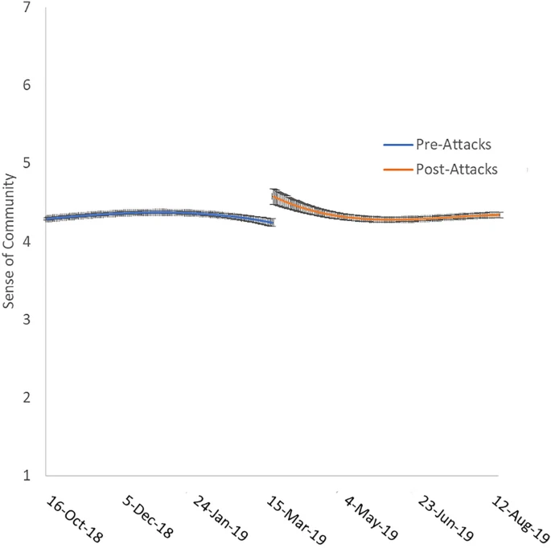
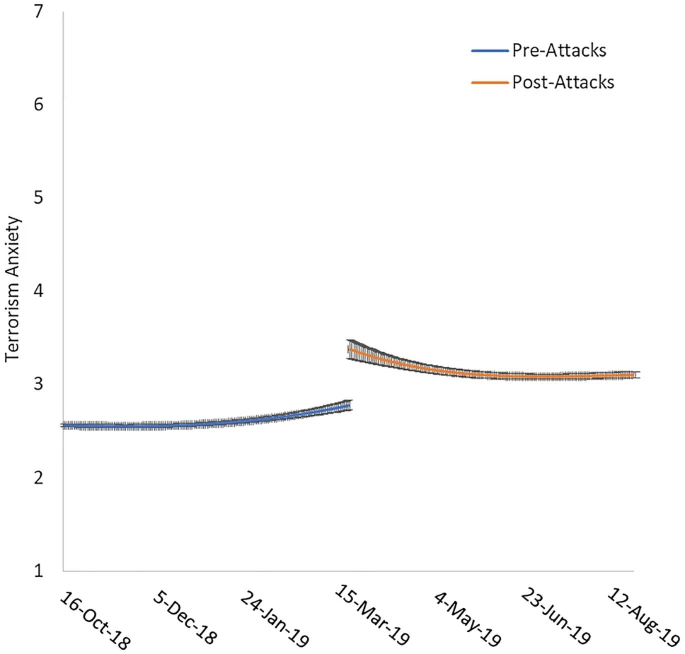
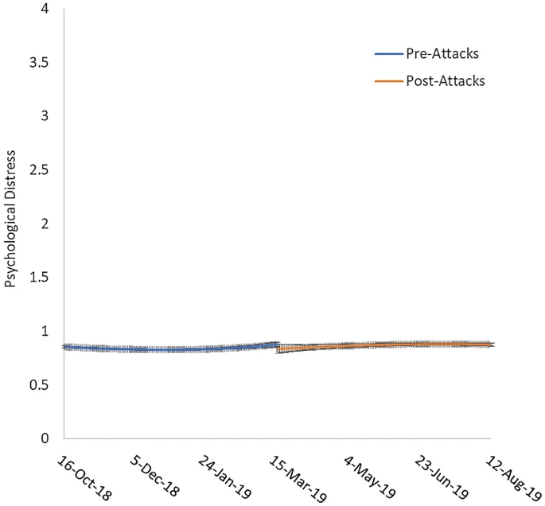
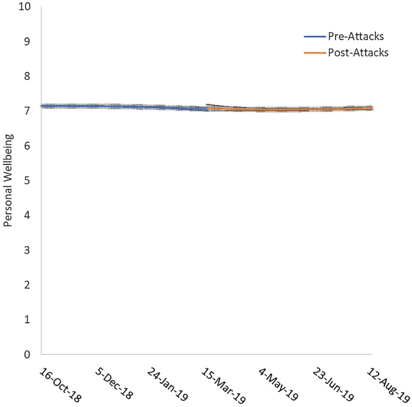

![]()
Abstract
The Christchurch mosque shootings on March 15th, 2019 was the deadliest incident of mass violence in New Zealand for over a century. The present study investigated the psychological impact of these terrorist attacks targeting a specific minority community on the psychological functioning of the wider New Zealand population by examining changes in terrorism anxiety, sense of community, psychological distress, and wellbeing. Data from the New Zealand Attitudes and Values Survey (N = 47,951; age range 18–99 years, M = 48.59, SD = 13.86; 62% female) collected across a year, including approximately 6 months following the terrorist attack, was used. Regression discontinuity analyses found a statistically significant increase in terrorism anxiety and sense of community following the attacks, yet counterintuitively, no significant change in psychological distress or wellbeing. These findings provide unique insight into the psychological implications of politically motivated violence for the wider population when terrorism is directed toward a specific minority group.
Important figures
Figure 1: Sense of community approximately 150 days pre-attacks and 150 days post-attacks. Error bars represent standard error.

Figure 2: Terrorism anxiety approximately 150 days pre-attacks and 150 days post-attacks. Error bars represent standard error.

Figure 3: Psychological distress approximately 150 days pre-attacks and 150 days post-attacks. Error bars represent standard error.

Figure 4: Personal wellbeing approximately 150 days pre-attacks and 150 days post-attacks. Error bars represent standard error.

BibTeX citation
@article{byrne2022psychological,
title={Psychological impact of far-right terrorism against Muslim minorities on national distress, community, and wellbeing},
author={Byrne, Kate G and Yogeeswaran, Kumar and Dorahy, Martin J and Gale, Jessica and Afzali, M Usman and Bulbulia, Joseph and Sibley, Chris G},
journal={Scientific reports},
volume={12},
number={1620},
year={2022},
publisher={Nature Publishing Group UK London}
}